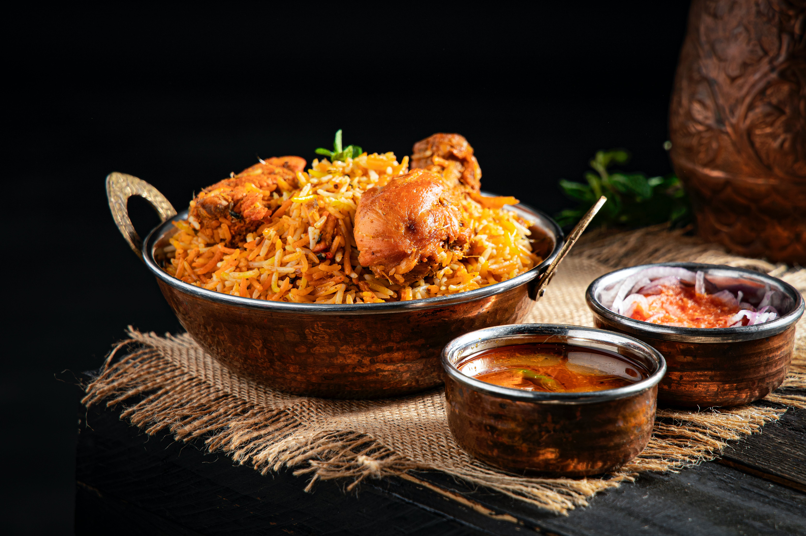
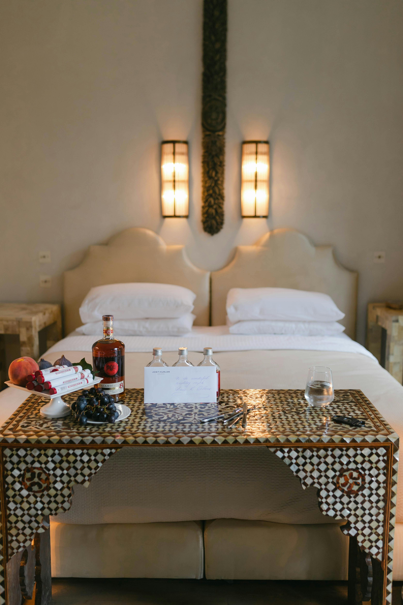

Taniti currently has 10 restaurants.
- Five serve mostly local fish and rice
- Three serve American-style meals
- Two serve Pan-Asian cuisine
Grocery
- Taniti has two supermarkets
- Two smaller grocery stores
- One convenience store that is open 24 hours a day


A wide variety of lodging that ranges from an inexpensive hostel to one large, four-star resort. There are many small, family-owned hotels and a growing number of bed and breakfasts. All types of lodging are strictly regulated and regularly inspected by the Tanitian government.
Lodging
A wide variety of lodging that ranges from an inexpensive hostel to one large, four-star resort. There are many small, family-owned hotels and a growing number of bed and breakfasts. All types of lodging are strictly regulated and regularly inspected by the Tanitian government.